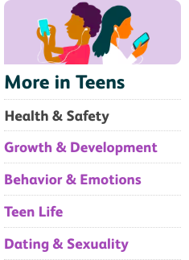

It should come as no surprise that the pressure to be available 24/7 onsocial media is a very real challenge for today's teenagers. Aside from the fact that their grasp of and dependence on social media far exceeds that of many adults, they also are using social media at much greater rates too. In fact, a report by Common Sense Media found that 75 percent of American teenagers have social media profiles. Social media is a daily part of life for the vast majority of teens.
 CLICK HERE FOR SOURCE